Aula 02 — Flask e Bootstrap¶
Disciplina: Programação para Internet (ILP951)
Professor: Ronan Adriel Zenatti
Pré-requisitos: Aula 01 concluída — Python instalado, VS Code configurado, ambiente virtual criado e ativado, repositório Git funcionando.
🗺️ O que você vai aprender nesta aula¶
Na aula anterior você montou o ambiente e escreveu páginas HTML estáticas — arquivos que o navegador lê diretamente do disco, sem nenhuma lógica por trás. Hoje isso muda. Você vai instalar o Flask, entender o que é um servidor web, escrever seu primeiro "Hello World" dinâmico com Python e estilizar a página com Bootstrap. Pela primeira vez, você verá o back-end e o front-end conversando — e esse é o momento em que a programação web começa a fazer sentido de verdade.
Parte 1 — O que é um servidor web?¶
A diferença entre uma página estática e uma dinâmica¶
Na Aula 01, quando você abriu o index.html no navegador, o que aconteceu foi simples: o navegador leu o arquivo do seu disco rígido e exibiu o conteúdo. Não havia nenhum processamento envolvido — o arquivo sempre mostraria a mesma coisa para qualquer pessoa que o abrisse. Isso é uma página estática.
Agora pense em um site como o seu banco. Quando você faz login, a página exibe seu nome, seu saldo, suas últimas transações. Essas informações são diferentes para cada usuário e mudam ao longo do tempo. Não é possível escrever isso em um arquivo HTML fixo — o conteúdo precisa ser gerado no momento em que a página é solicitada, com base em quem está pedindo e nos dados do banco de dados. Isso é uma página dinâmica.
Para gerar páginas dinâmicas, você precisa de um servidor web: um programa que fica aguardando pedidos (chamados de requisições) e responde a cada um com o conteúdo adequado, gerado em tempo real pelo código Python.
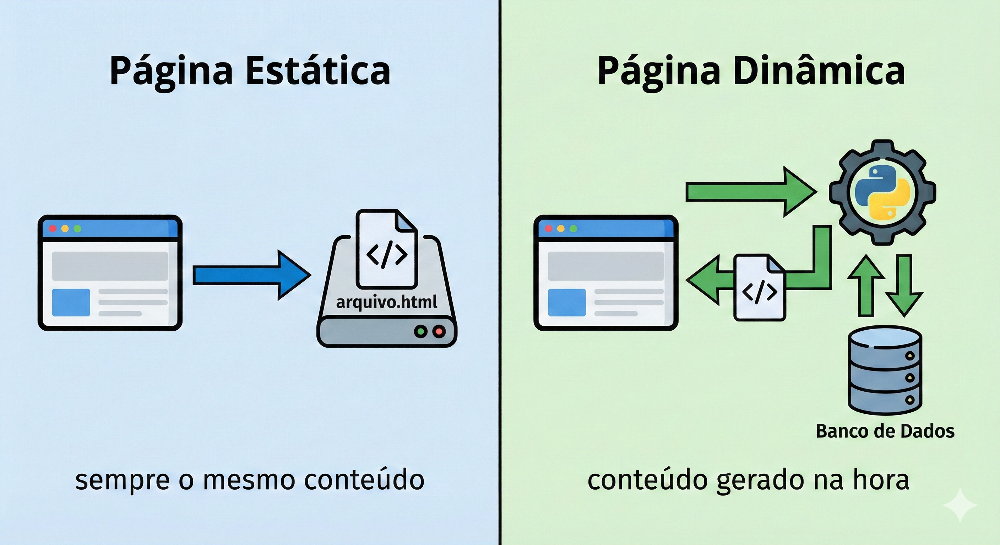
Como o Flask se encaixa nessa história¶
O Flask é um microframework para Python que transforma o seu script Python em um servidor web. Quando você roda uma aplicação Flask, ela "escuta" em uma porta do seu computador (por padrão, a porta 5000) e responde a qualquer navegador que faça uma requisição para esse endereço.
O "micro" no nome não significa que o Flask é limitado — significa que ele começa enxuto, sem impor estrutura ou dependências desnecessárias. Você adiciona exatamente o que precisa. Isso o torna ideal para aprender, porque você consegue enxergar claramente o que está acontecendo em cada etapa.
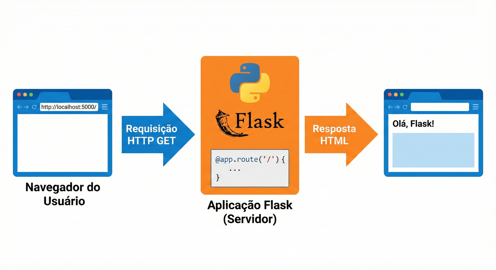
Parte 2 — Instalando o Flask¶
pip: o instalador de pacotes do Python¶
O Python vem acompanhado de uma ferramenta chamada pip (Package Installer for Python). O pip é para o Python o que a App Store é para um smartphone: um repositório enorme de bibliotecas prontas que você pode instalar com um único comando. O Flask é uma dessas bibliotecas.
Antes de instalar qualquer coisa, verifique que o seu ambiente virtual está ativo. Lembre-se: o terminal deve mostrar o prefixo (venv) no início da linha. Se não estiver ativo, navegue até a pasta do projeto e execute venv\Scripts\activate.
Com o ambiente virtual ativo, instale o Flask:
pip install flask
Você verá o pip baixando e instalando o Flask e suas dependências (outras bibliotecas das quais o Flask precisa para funcionar). Quando terminar, confirme a instalação:
pip show flask
O comando pip show exibe informações sobre um pacote instalado — nome, versão, localização. Se você ver essas informações, o Flask está pronto.
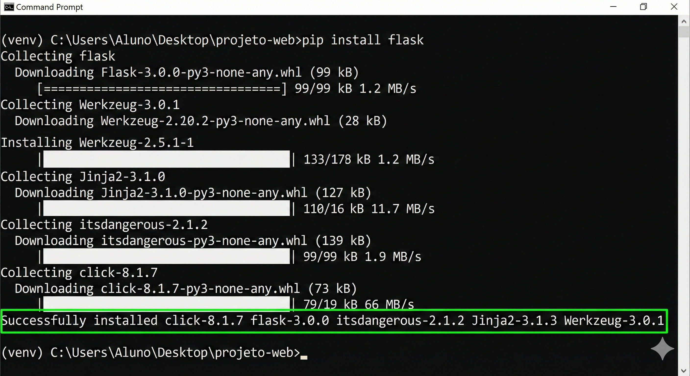
O arquivo requirements.txt¶
Existe um problema prático importante: se outra pessoa quiser rodar seu projeto (ou se você mesmo precisar configurar o projeto em outro computador), ela precisará saber quais bibliotecas instalar. O requirements.txt é a solução — um arquivo que lista todas as dependências do projeto com suas versões.
Gere-o com um único comando:
pip freeze > requirements.txt
O comando pip freeze lista todos os pacotes instalados no ambiente virtual. O > redireciona essa saída para dentro do arquivo requirements.txt, criando-o automaticamente. Para instalar todas as dependências listadas em outro computador, basta executar pip install -r requirements.txt.
Faça um commit com essa adição:
git add requirements.txt
git commit -m "Aula 02: Flask instalado, requirements.txt gerado"
Parte 3 — O padrão MVC: entendendo a arquitetura antes de codificar¶
Antes de escrever o primeiro código Flask, é fundamental entender o padrão arquitetural que estará por trás de toda a aplicação que vamos construir. Esse padrão se chama MVC — Model, View, Controller (Modelo, Visão e Controlador).
Pense em um restaurante. O garçom recebe o pedido do cliente e o leva para a cozinha — ele é o ponto de contato, sabe o que está disponível no cardápio e direciona os pedidos. A cozinha processa o pedido, prepara o prato com os ingredientes do estoque. O prato finalizado é o que chega à mesa do cliente.
No MVC: o Controller é o garçom — recebe as requisições do navegador e decide o que fazer com elas. O Model é a cozinha com o estoque — representa os dados e a lógica de negócio, geralmente conectada ao banco de dados. A View é o prato finalizado — o HTML que será apresentado ao usuário, montado com os dados fornecidos pelo Controller.
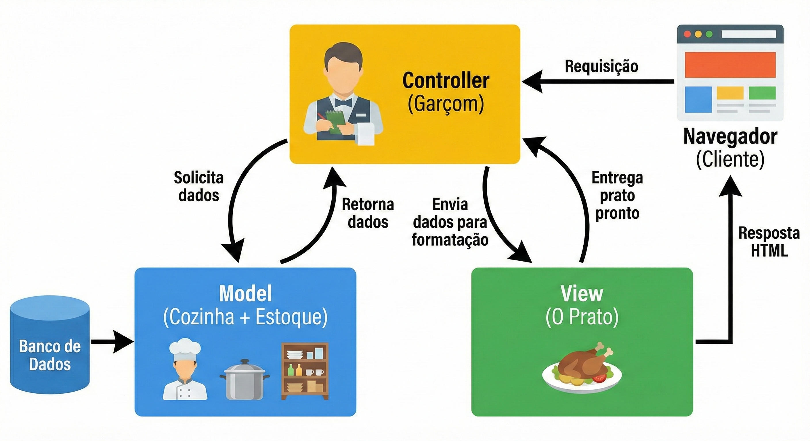
No Flask, essa separação fica assim: as rotas (funções Python decoradas com @app.route) são os Controllers. Os templates HTML (arquivos na pasta templates/) são as Views. Os modelos de dados (que criaremos a partir da Aula 05) são os Models. Hoje vamos trabalhar com Controllers e Views — o Model entra na Aula 05 quando conectarmos ao banco de dados.
Parte 4 — A estrutura de pastas do projeto Flask¶
Antes de escrever código, vamos organizar a estrutura de pastas que usaremos. Uma boa estrutura facilita a manutenção do projeto à medida que ele cresce.
projeto-web/
│
├── app.py ← arquivo principal: inicia o servidor Flask
├── requirements.txt ← lista de dependências
├── .gitignore ← arquivos que o Git deve ignorar
├── venv/ ← ambiente virtual (ignorado pelo Git)
│
├── templates/ ← arquivos HTML (as Views do MVC)
│ └── index.html
│
└── static/ ← arquivos estáticos (CSS, JS, imagens)
├── css/
├── js/
└── imgs/
A pasta templates/ é especial para o Flask: por padrão, ele procura os arquivos HTML exatamente lá. Da mesma forma, static/ é onde ficam os arquivos que não mudam — folhas de estilo, scripts JavaScript e imagens. Crie essa estrutura agora:
mkdir templates
mkdir static
mkdir static\css
mkdir static\js
mkdir static\imgs
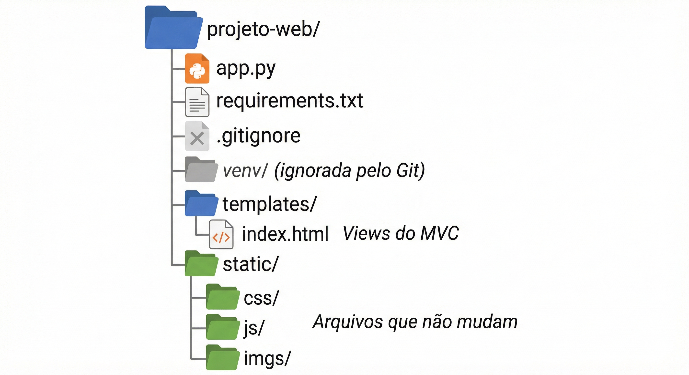
Parte 5 — Primeiro Hello World com Flask¶
Chegou o momento. Vamos escrever o primeiro arquivo Python que transforma o seu computador em um servidor web.
Entendendo o código antes de escrevê-lo¶
Há quatro conceitos novos neste primeiro arquivo que merecem explicação antes do código em si.
O primeiro é a importação. Em Python, quando você quer usar uma biblioteca externa, precisa importá-la no topo do arquivo. É como pegar um livro da estante antes de começar a ler — você traz o que precisa para perto.
O segundo é a instância da aplicação. Toda aplicação Flask começa criando um objeto app a partir da classe Flask. Esse objeto é o coração da aplicação — ele conhece todas as rotas, todas as configurações e é responsável por receber as requisições.
O terceiro é o decorador de rota (@app.route). Um decorador é uma instrução especial do Python que fica na linha imediatamente acima de uma função e modifica seu comportamento. O @app.route('/') diz ao Flask: "quando alguém acessar o endereço /, execute a função logo abaixo". A barra / representa a raiz do site — o endereço principal.
O quarto é o if __name__ == '__main__'. Essa é uma convenção do Python: o bloco dentro desse if só é executado quando você roda o arquivo diretamente (com python app.py), e não quando ele é importado por outro arquivo. O debug=True ativa o modo de desenvolvimento, que recarrega automaticamente o servidor cada vez que você salva uma mudança no código — essencial durante o desenvolvimento.
Exemplo prático 1 — O Hello World mais simples possível¶
Crie o arquivo app.py na raiz do projeto com o seguinte conteúdo:
# Importa a classe Flask da biblioteca flask
# Sem essa linha, o Python não sabe o que é "Flask"
from flask import Flask
# Cria a instância da aplicação Flask
# __name__ é uma variável especial do Python que contém o nome do módulo atual
# O Flask usa isso para saber onde procurar os templates e arquivos estáticos
app = Flask(__name__)
# O decorador @app.route define qual URL aciona esta função
# '/' é a rota raiz — o endereço principal do site (ex: http://localhost:5000/)
@app.route('/')
def pagina_inicial():
# Esta função retorna o que o navegador vai receber como resposta
# Por enquanto, retornamos uma string HTML simples
return '<h1>Olá, mundo!</h1><p>Meu primeiro servidor Flask está funcionando.</p>'
# Bloco de execução: só roda quando o arquivo é executado diretamente
if __name__ == '__main__':
# debug=True ativa o recarregamento automático ao salvar o arquivo
# NUNCA use debug=True em produção (servidor público)
app.run(debug=True)
Com o ambiente virtual ativo e o terminal dentro da pasta projeto-web, execute:
python app.py
Você verá uma saída como esta:
* Serving Flask app 'app'
* Debug mode: on
* Running on http://127.0.0.1:5000
Press CTRL+C to quit
Abra o navegador e acesse http://127.0.0.1:5000 (ou http://localhost:5000 — são equivalentes). Você verá o "Olá, mundo!" gerado pelo Python. Isso é histórico: pela primeira vez, o Python está respondendo ao seu navegador.
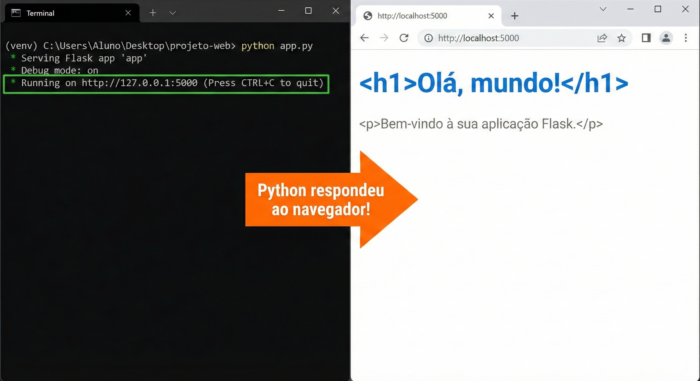
💡 O que é localhost? O endereço
127.0.0.1(oulocalhost) é um endereço especial que significa "este computador". Quando você acessalocalhost:5000, o navegador está se comunicando com um servidor que está rodando no seu próprio computador — por isso ele é chamado de servidor de desenvolvimento.⚠️ Para parar o servidor: pressione
CTRL + Cno terminal. O servidor para imediatamente. Para reiniciá-lo, executepython app.pynovamente.
Exemplo prático 2 — Múltiplas rotas¶
Uma aplicação web real tem várias páginas. Cada página corresponde a uma rota diferente no Flask. Vamos expandir o app.py para ter três rotas:
from flask import Flask
app = Flask(__name__)
@app.route('/')
def pagina_inicial():
# Rota raiz: exibida quando o usuário acessa http://localhost:5000/
return '''
<h1>Sistema de Gestão</h1>
<p>Bem-vindo ao sistema.</p>
<a href="/sobre">Sobre o sistema</a> |
<a href="/contato">Contato</a>
'''
# Observe que usamos três aspas (''') para strings de múltiplas linhas em Python
# Isso permite quebrar o HTML em várias linhas sem concatenação
@app.route('/sobre')
def sobre():
# Rota /sobre: http://localhost:5000/sobre
return '''
<h1>Sobre o Sistema</h1>
<p>Este sistema foi desenvolvido na disciplina Programação para Internet.</p>
<a href="/">Voltar ao início</a>
'''
@app.route('/contato')
def contato():
# Rota /contato: http://localhost:5000/contato
return '''
<h1>Contato</h1>
<p>Professor: Ronan Adriel Zenatti</p>
<p>FATEC Jahu — Gestão da Tecnologia da Informação</p>
<a href="/">Voltar ao início</a>
'''
if __name__ == '__main__':
app.run(debug=True)
Salve o arquivo. Como o debug=True está ativo, o servidor recarregará automaticamente. Acesse as três rotas no navegador e observe como a URL muda e cada função retorna um conteúdo diferente.
Exemplo prático 3 — Rota com variável na URL¶
As rotas não precisam ser fixas. É possível criar rotas que aceitam partes variáveis na URL — como o ID de um produto ou o nome de um usuário. Adicione esta rota ao app.py:
@app.route('/usuario/<nome>')
def perfil_usuario(nome):
# <nome> na rota captura qualquer texto nessa posição da URL
# Esse valor é passado automaticamente como parâmetro para a função
# Exemplo: acessar /usuario/joao passa nome='joao' para esta função
return f'<h1>Perfil do usuário: {nome}</h1><p>Olá, {nome}! Sua conta está ativa.</p>'
# O 'f' antes das aspas cria uma f-string: permite inserir variáveis
# Python diretamente no texto usando chaves {}
Acesse http://localhost:5000/usuario/joao e depois http://localhost:5000/usuario/maria. Veja como a página muda conforme o que está na URL. Esse mecanismo é fundamental — é assim que sistemas exibem páginas de perfil, detalhes de produtos, etc.
Parte 6 — Templates: separando o HTML do Python¶
Por que misturar HTML no Python é um problema¶
Nos exemplos anteriores, o HTML estava escrito diretamente dentro das funções Python — dentro de strings. Isso funciona para exemplos simples, mas em um projeto real causa sérios problemas: páginas HTML têm centenas de linhas, e misturá-las com código Python torna ambos ilegíveis. Imagine tentar fazer manutenção em um arquivo com 500 linhas misturando Python e HTML desordenadamente.
A solução do Flask para isso são os templates — arquivos HTML separados que ficam na pasta templates/, com uma capacidade especial: eles podem receber variáveis do Python e exibi-las dinamicamente. O motor de templates que o Flask usa se chama Jinja2, e estudaremos ele com profundidade na Aula 03. Por agora, vamos aprender a usar a função render_template, que carrega um arquivo HTML da pasta templates/ e o envia ao navegador.
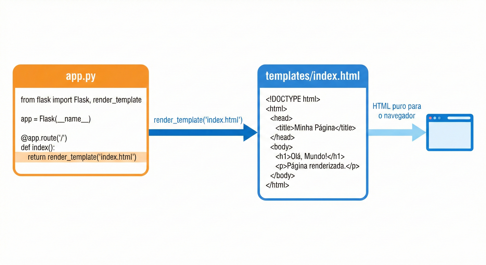
Usando render_template¶
Crie o arquivo templates/index.html com este conteúdo:
<!DOCTYPE html>
<html lang="pt-BR">
<head>
<meta charset="UTF-8">
<meta name="viewport" content="width=device-width, initial-scale=1.0">
<title>Sistema de Gestão</title>
</head>
<body>
<h1>Sistema de Gestão</h1>
<p>Bem-vindo ao sistema desenvolvido com Flask.</p>
<nav>
<a href="/">Início</a> |
<a href="/sobre">Sobre</a> |
<a href="/contato">Contato</a>
</nav>
</body>
</html>
Agora atualize o app.py para usar render_template em vez de retornar HTML em string:
# Importa Flask e também a função render_template
from flask import Flask, render_template
app = Flask(__name__)
@app.route('/')
def pagina_inicial():
# render_template busca o arquivo na pasta templates/
# e retorna seu conteúdo como resposta HTTP
return render_template('index.html')
@app.route('/sobre')
def sobre():
return render_template('sobre.html')
@app.route('/contato')
def contato():
return render_template('contato.html')
if __name__ == '__main__':
app.run(debug=True)
Crie também os arquivos templates/sobre.html e templates/contato.html com estrutura HTML5 válida e conteúdo adequado. O código Python ficou muito mais limpo, e o HTML ficou em arquivos próprios onde pode ser editado com toda a ajuda do VS Code (autocompletar, validação de tags, etc.).
Parte 7 — Bootstrap: estilizando sem escrever CSS do zero¶
O problema do CSS puro para iniciantes¶
Até aqui, todas as nossas páginas estão com a aparência padrão do navegador — fundo branco, texto preto, fonte serifada, sem nenhum layout. Criar um design profissional do zero com CSS puro exige conhecimento profundo de estilos, responsividade, flexbox, grid e dezenas de outros conceitos. Isso não é o foco desta disciplina.
O Bootstrap resolve isso fornecendo um conjunto de estilos e componentes prontos que você ativa simplesmente adicionando classes CSS específicas nos seus elementos HTML. Com Bootstrap, você consegue criar uma página com aparência profissional e que funciona bem em celular e computador em questão de minutos.
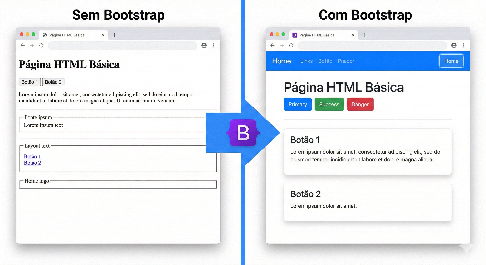
Como incluir o Bootstrap via CDN¶
Existem duas formas de usar o Bootstrap: baixando os arquivos ou usando um CDN (Content Delivery Network — uma rede de servidores que hospeda bibliotecas populares para uso público). Usaremos o CDN por ser mais simples: basta adicionar uma linha de <link> no <head> do HTML.
A linha a seguir adiciona o Bootstrap 5 à sua página:
<link href="https://cdn.jsdelivr.net/npm/bootstrap@5.3.0/dist/css/bootstrap.min.css"
rel="stylesheet">
E opcionalmente, no final do <body>, o JavaScript do Bootstrap (necessário para componentes interativos como menus e modais):
<script src="https://cdn.jsdelivr.net/npm/bootstrap@5.3.0/dist/js/bootstrap.bundle.min.js">
</script>
💡 CDN vs. arquivo local: usar o CDN significa que o computador do usuário precisa ter acesso à internet para carregar o Bootstrap. Em produção isso é ótimo (os arquivos são servidos rapidamente de servidores otimizados ao redor do mundo). Em desenvolvimento, se você estiver sem internet, o Bootstrap não carregará. Para o laboratório, sempre haverá conexão disponível.
As classes utilitárias do Bootstrap¶
O Bootstrap funciona com classes CSS utilitárias — nomes predefinidos que, quando adicionados ao atributo class de um elemento HTML, aplicam estilos automaticamente. Você não escreve CSS, você escolhe classes. Veja como isso funciona na prática antes de ver o código completo.
Exemplo prático 1 — Página simples com Bootstrap¶
Vamos reescrever o templates/index.html usando Bootstrap. Observe como as classes mudam completamente a aparência:
<!DOCTYPE html>
<html lang="pt-BR">
<head>
<meta charset="UTF-8">
<meta name="viewport" content="width=device-width, initial-scale=1.0">
<title>Sistema de Gestão</title>
<!-- Bootstrap CSS via CDN: carrega todos os estilos do Bootstrap -->
<link href="https://cdn.jsdelivr.net/npm/bootstrap@5.3.0/dist/css/bootstrap.min.css"
rel="stylesheet">
</head>
<body>
<!-- container: classe Bootstrap que centraliza o conteúdo e adiciona margens laterais -->
<!-- mt-5: "margin-top 5" — adiciona espaço acima do elemento -->
<div class="container mt-5">
<!-- display-4: classe Bootstrap para títulos grandes e elegantes -->
<h1 class="display-4">Sistema de Gestão</h1>
<!-- lead: texto de introdução levemente maior e mais claro -->
<p class="lead">Bem-vindo ao sistema desenvolvido na disciplina Programação para Internet.</p>
<!-- hr: linha horizontal divisória -->
<hr>
<!-- d-flex gap-2: exibe os botões lado a lado com espaço entre eles -->
<div class="d-flex gap-2">
<!-- btn btn-primary: botão azul padrão do Bootstrap -->
<a href="/" class="btn btn-primary">Início</a>
<!-- btn btn-secondary: botão cinza -->
<a href="/sobre" class="btn btn-secondary">Sobre</a>
<!-- btn btn-outline-dark: botão com apenas borda, sem preenchimento -->
<a href="/contato" class="btn btn-outline-dark">Contato</a>
</div>
</div>
<!-- Bootstrap JS: necessário para componentes interativos (menus, modais, etc.) -->
<script src="https://cdn.jsdelivr.net/npm/bootstrap@5.3.0/dist/js/bootstrap.bundle.min.js">
</script>
</body>
</html>
Salve e acesse o navegador. A diferença em relação à versão sem Bootstrap é imediata — tipografia melhorada, botões estilizados, margens adequadas.
Exemplo prático 2 — Navbar de navegação¶
A navbar é um dos componentes mais usados do Bootstrap — a barra de navegação no topo da página. Ela é responsiva: em telas grandes aparece como barra horizontal, e em celulares colapsa para um menu hamburguer. Atualize o templates/index.html:
<!DOCTYPE html>
<html lang="pt-BR">
<head>
<meta charset="UTF-8">
<meta name="viewport" content="width=device-width, initial-scale=1.0">
<title>Sistema de Gestão</title>
<link href="https://cdn.jsdelivr.net/npm/bootstrap@5.3.0/dist/css/bootstrap.min.css"
rel="stylesheet">
</head>
<body>
<!-- navbar: barra de navegação -->
<!-- navbar-expand-lg: em telas grandes (lg) a navbar fica expandida; em telas menores, colapsa -->
<!-- navbar-dark bg-dark: texto claro sobre fundo escuro -->
<nav class="navbar navbar-expand-lg navbar-dark bg-dark">
<!-- container: centraliza o conteúdo da navbar -->
<div class="container">
<!-- navbar-brand: o "logo" ou nome da aplicação à esquerda -->
<a class="navbar-brand" href="/">SistemaGestão</a>
<!-- navbar-toggler: o botão hamburguer que aparece em telas pequenas -->
<!-- data-bs-toggle e data-bs-target: conectam o botão ao menu colapsável -->
<button class="navbar-toggler" type="button"
data-bs-toggle="collapse" data-bs-target="#navbarNav">
<span class="navbar-toggler-icon"></span>
</button>
<!-- collapse navbar-collapse: o conjunto de links que colapsa em telas pequenas -->
<!-- id="navbarNav": deve bater com o data-bs-target do botão acima -->
<div class="collapse navbar-collapse" id="navbarNav">
<!-- navbar-nav ms-auto: lista de links, ms-auto empurra para a direita -->
<ul class="navbar-nav ms-auto">
<li class="nav-item">
<!-- nav-link active: link ativo (página atual) fica destacado -->
<a class="nav-link active" href="/">Início</a>
</li>
<li class="nav-item">
<a class="nav-link" href="/sobre">Sobre</a>
</li>
<li class="nav-item">
<a class="nav-link" href="/contato">Contato</a>
</li>
</ul>
</div>
</div>
</nav>
<!-- Conteúdo principal da página -->
<div class="container mt-5">
<h1 class="display-4">Bem-vindo</h1>
<p class="lead">
Este é o sistema desenvolvido ao longo do semestre na disciplina
Programação para Internet — FATEC Jahu.
</p>
<!-- alert alert-info: caixa de informação azul -->
<div class="alert alert-info">
<strong>Aula 02:</strong> Flask e Bootstrap funcionando juntos!
</div>
<a href="/sobre" class="btn btn-primary btn-lg">Saiba Mais</a>
</div>
<script src="https://cdn.jsdelivr.net/npm/bootstrap@5.3.0/dist/js/bootstrap.bundle.min.js">
</script>
</body>
</html>
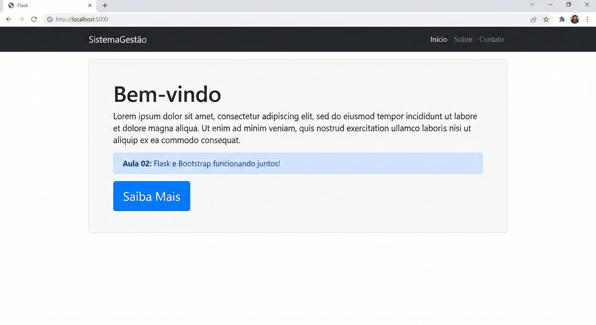
Exemplo prático 3 — Grid e Cards¶
O sistema de grid é um dos recursos mais poderosos do Bootstrap. Ele divide a linha em 12 colunas, permitindo que você controle com precisão como o conteúdo se distribui em telas de diferentes tamanhos. Os cards são componentes versáteis para exibir informações agrupadas — com título, texto, imagem e botões.
Crie um arquivo templates/sobre.html:
<!DOCTYPE html>
<html lang="pt-BR">
<head>
<meta charset="UTF-8">
<meta name="viewport" content="width=device-width, initial-scale=1.0">
<title>Sobre — Sistema de Gestão</title>
<link href="https://cdn.jsdelivr.net/npm/bootstrap@5.3.0/dist/css/bootstrap.min.css"
rel="stylesheet">
</head>
<body>
<nav class="navbar navbar-expand-lg navbar-dark bg-dark">
<div class="container">
<a class="navbar-brand" href="/">SistemaGestão</a>
</div>
</nav>
<div class="container mt-5">
<h2 class="mb-4">Tecnologias Utilizadas</h2>
<!-- row: uma linha do sistema de grid do Bootstrap -->
<div class="row">
<!-- col-md-4: em telas médias (md) ou maiores, cada card ocupa 4 colunas
(4 + 4 + 4 = 12 — três colunas iguais lado a lado)
Em telas pequenas (celular), cada card ocupa a linha inteira -->
<div class="col-md-4 mb-4">
<!-- card: componente Bootstrap para conteúdo agrupado -->
<div class="card h-100">
<!-- card-body: área interna do card com padding automático -->
<div class="card-body">
<!-- card-title: título do card em negrito -->
<h5 class="card-title">🐍 Python + Flask</h5>
<!-- card-text: texto descritivo do card -->
<p class="card-text">
Linguagem de programação e microframework responsáveis pelo
back-end da aplicação — processamento das requisições e lógica
de negócio.
</p>
</div>
</div>
</div>
<div class="col-md-4 mb-4">
<div class="card h-100">
<div class="card-body">
<h5 class="card-title">🎨 Bootstrap 5</h5>
<p class="card-text">
Framework CSS que fornece componentes visuais prontos e um
sistema de grid responsivo, permitindo criar interfaces
profissionais rapidamente.
</p>
</div>
</div>
</div>
<div class="col-md-4 mb-4">
<div class="card h-100">
<div class="card-body">
<h5 class="card-title">🗄️ MySQL</h5>
<p class="card-text">
Sistema de banco de dados relacional onde serão armazenados
todos os dados da aplicação — usuários, registros e
informações gerenciais.
</p>
</div>
</div>
</div>
</div>
<!-- Fim da row -->
<a href="/" class="btn btn-secondary">← Voltar</a>
</div>
<script src="https://cdn.jsdelivr.net/npm/bootstrap@5.3.0/dist/js/bootstrap.bundle.min.js">
</script>
</body>
</html>
Parte 8 — O sistema de grid em detalhes¶
O grid do Bootstrap divide cada linha em 12 colunas. Você controla quantas colunas cada elemento ocupa adicionando classes como col-4 (4 de 12 = um terço da largura) ou col-6 (6 de 12 = metade da largura). O prefixo indica o breakpoint (tamanho de tela) a partir do qual a regra se aplica.
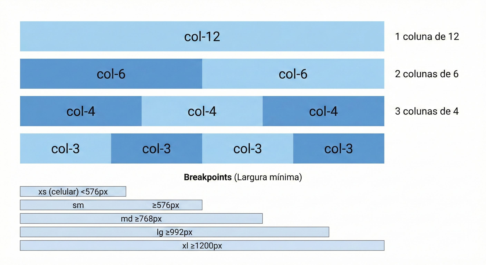
A tabela abaixo resume os breakpoints — os pontos de quebra onde o layout muda conforme o tamanho da tela:
| Prefixo | Tela | Largura mínima | Uso típico |
|---|---|---|---|
| (nenhum) | Todas | 0px | Mobile first |
sm |
Small | 576px | Celular grande |
md |
Medium | 768px | Tablet |
lg |
Large | 992px | Notebook |
xl |
Extra large | 1200px | Desktop |
Então quando você escreve col-md-4, está dizendo: "em telas médias ou maiores, ocupe 4 colunas; em telas menores que md, ocupe a linha inteira (comportamento padrão)". Isso é o que torna o Bootstrap responsivo sem que você escreva media queries manualmente.
Parte 9 — Arquivos estáticos: imagens, CSS e JavaScript próprios¶
Por que a pasta static/ existe¶
Até agora você usou o Bootstrap via CDN — os arquivos CSS e JS vêm da internet. Mas em qualquer projeto real você vai precisar de recursos próprios: um logotipo da empresa, um CSS personalizado para ajustar cores e fontes, ou um script JavaScript específico para alguma funcionalidade. Esses recursos ficam todos na pasta static/.
O Flask serve automaticamente qualquer arquivo que esteja em static/ — basta referenciar o caminho correto. O que diferencia essa pasta das demais é que o Flask não a processa: arquivos lá são entregues ao navegador exatamente como estão, sem nenhuma transformação. São os chamados arquivos estáticos.
A estrutura recomendada dentro de static/ organiza cada tipo de arquivo em sua própria subpasta:
static/
├── css/
│ └── estilo.css ← seus estilos personalizados
├── js/
│ └── scripts.js ← seu código JavaScript próprio
└── imgs/
├── logo.png ← logotipo do sistema
└── banner.jpg ← outras imagens
A função url_for com arquivos estáticos¶
A forma correta de referenciar um arquivo estático em um template Flask é usando a função url_for com o endpoint especial 'static' e o parâmetro filename indicando o caminho relativo à pasta static/:
<!-- Sintaxe geral -->
{{ url_for('static', filename='subpasta/arquivo.extensao') }}
<!-- Exemplos concretos -->
{{ url_for('static', filename='css/estilo.css') }}
{{ url_for('static', filename='js/scripts.js') }}
{{ url_for('static', filename='imgs/logo.png') }}
⚠️ Por que não usar o caminho direto? Você poderia escrever
href="/static/css/estilo.css"e funcionaria na maioria dos casos. Mas se um dia você mover a aplicação para uma subpasta (ex:http://servidor.com/meu-sistema/), todos os caminhos absolutos quebrariam. Ourl_forajusta o caminho automaticamente conforme o contexto da aplicação — sempre use-o.
Exemplo prático 4 — CSS personalizado¶
Vamos criar um arquivo de estilos próprios que se somam ao Bootstrap. Crie o arquivo static/css/estilo.css:
/* static/css/estilo.css */
/* Estilos personalizados do Sistema de Gestão */
/* Estes estilos complementam o Bootstrap — nunca substituem */
/* ── Variáveis de cor do sistema ─────────────────────────────────── */
/* Variáveis CSS permitem reutilizar valores e facilitar manutenção */
:root {
--cor-primaria: #2c3e50; /* azul-petróleo escuro para cabeçalhos */
--cor-destaque: #e74c3c; /* vermelho para alertas e ênfase */
--cor-fundo: #f8f9fa; /* cinza muito claro para fundos */
}
/* ── Estilo da navbar ─────────────────────────────────────────────── */
/* Sobrescreve a cor padrão bg-dark do Bootstrap */
.navbar {
background-color: var(--cor-primaria) !important;
/* !important garante que este estilo prevaleça sobre o Bootstrap */
box-shadow: 0 2px 8px rgba(0,0,0,0.25);
/* sombra sutil para dar profundidade */
}
/* ── Rodapé personalizado ─────────────────────────────────────────── */
footer {
background-color: var(--cor-primaria);
color: #ccc;
padding: 1.5rem 0;
margin-top: 3rem;
text-align: center;
font-size: 0.875rem;
}
/* ── Cards com hover ──────────────────────────────────────────────── */
/* Efeito sutil ao passar o mouse sobre os cards */
.card {
transition: transform 0.2s ease, box-shadow 0.2s ease;
/* transition: define a animação suave ao mudar os valores */
}
.card:hover {
transform: translateY(-4px);
/* sobe levemente ao passar o mouse */
box-shadow: 0 6px 20px rgba(0,0,0,0.12);
/* sombra mais pronunciada */
}
/* ── Tabelas ──────────────────────────────────────────────────────── */
/* Cabeçalho de tabela com a cor primária do sistema */
.tabela-sistema thead {
background-color: var(--cor-primaria);
color: white;
}
/* ── Mensagens de boas-vindas ─────────────────────────────────────── */
.boas-vindas {
background: linear-gradient(135deg, var(--cor-primaria), #34495e);
color: white;
border-radius: 12px;
padding: 2.5rem;
margin-bottom: 2rem;
}
.boas-vindas h1 {
font-size: 2rem;
font-weight: 700;
margin-bottom: 0.5rem;
}
Agora vincule esse CSS ao template templates/index.html. Observe que o link do arquivo próprio vem depois do Bootstrap — isso garante que os seus estilos possam sobrescrever os do Bootstrap quando necessário:
<!DOCTYPE html>
<html lang="pt-BR">
<head>
<meta charset="UTF-8">
<meta name="viewport" content="width=device-width, initial-scale=1.0">
<title>Sistema de Gestão</title>
<!-- 1º: Bootstrap (base de estilos) -->
<link href="https://cdn.jsdelivr.net/npm/bootstrap@5.3.0/dist/css/bootstrap.min.css"
rel="stylesheet">
<!-- 2º: CSS próprio — carregado DEPOIS do Bootstrap para poder sobrescrever -->
<!-- url_for('static', filename=...) gera o caminho correto automaticamente -->
<link rel="stylesheet" href="{{ url_for('static', filename='css/estilo.css') }}">
</head>
<body>
<nav class="navbar navbar-expand-lg navbar-dark">
<div class="container">
<a class="navbar-brand fw-bold" href="/">🖥️ SistemaGestão</a>
</div>
</nav>
<div class="container mt-4">
<!-- Usando a classe personalizada definida no estilo.css -->
<div class="boas-vindas">
<h1>Bem-vindo ao Sistema</h1>
<p class="mb-0 opacity-75">
Desenvolvido na disciplina Programação para Internet — FATEC Jahu
</p>
</div>
<div class="row">
<div class="col-md-4 mb-3">
<div class="card h-100">
<div class="card-body text-center">
<div class="fs-1 mb-2">📦</div>
<h5>Produtos</h5>
<p class="text-muted small">Gerencie o catálogo</p>
</div>
</div>
</div>
<div class="col-md-4 mb-3">
<div class="card h-100">
<div class="card-body text-center">
<div class="fs-1 mb-2">👥</div>
<h5>Clientes</h5>
<p class="text-muted small">Gerencie os clientes</p>
</div>
</div>
</div>
<div class="col-md-4 mb-3">
<div class="card h-100">
<div class="card-body text-center">
<div class="fs-1 mb-2">📊</div>
<h5>Relatórios</h5>
<p class="text-muted small">Visualize os dados</p>
</div>
</div>
</div>
</div>
</div>
<footer>
<div class="container">
© 2026 SistemaGestão — FATEC Jahu
</div>
</footer>
<script src="https://cdn.jsdelivr.net/npm/bootstrap@5.3.0/dist/js/bootstrap.bundle.min.js">
</script>
</body>
</html>
Acesse http://localhost:5000 e veja a navbar com a cor personalizada, o banner de boas-vindas com gradiente, o rodapé e os cards com o efeito de elevação ao passar o mouse — tudo vindo do seu estilo.css.
Exemplo prático 5 — Imagens da pasta static/¶
Imagens próprias do sistema — logotipo, ícones, banners — ficam em static/imgs/. Para exibir uma imagem em um template, use url_for no atributo src da tag <img>:
<!-- Sintaxe para imagens estáticas -->
<img src="{{ url_for('static', filename='imgs/logo.png') }}"
alt="Logotipo do Sistema"
width="120">
Vamos colocar isso em prática. Primeiro, coloque qualquer imagem PNG na pasta static/imgs/ e nomeie-a logo.png. Pode ser um ícone simples, uma foto ou qualquer imagem de teste. Depois, adicione o logotipo à navbar no template:
<!-- Dentro da tag <nav>, substitua o texto do navbar-brand pela imagem -->
<a class="navbar-brand d-flex align-items-center gap-2" href="/">
<img
src="{{ url_for('static', filename='imgs/logo.png') }}"
alt="Logo SistemaGestão"
height="32"
<!-- height="32": define a altura; a largura se ajusta proporcionalmente -->
>
SistemaGestão
</a>
💡 Formatos recomendados: Use
.pngpara logotipos e ícones (suporta transparência),.jpgpara fotografias (melhor compressão), e.svgpara ícones vetoriais (escala sem perder qualidade). Evite imagens muito grandes — redimensione antes de colocar emstatic/imgs/.
Você também pode usar imagens dentro de cards, como capas de produtos ou avatares de usuários:
<div class="card" style="max-width: 300px">
<!-- card-img-top: imagem no topo do card, bordas arredondadas no topo -->
<img
src="{{ url_for('static', filename='imgs/produto_notebook.jpg') }}"
class="card-img-top"
alt="Notebook Dell Inspiron"
>
<div class="card-body">
<h5 class="card-title">Notebook Dell Inspiron</h5>
<p class="card-text text-success fw-bold">R$ 3.499,90</p>
<a href="#" class="btn btn-primary btn-sm">Ver detalhes</a>
</div>
</div>
Exemplo prático 6 — JavaScript próprio¶
Scripts JavaScript que você escreve ficam em static/js/. São incluídos no final do <body>, depois do Bootstrap JS, para não bloquear o carregamento da página:
// static/js/scripts.js
// Scripts personalizados do Sistema de Gestão
// ── Confirmação antes de excluir ──────────────────────────────────────
// Esta função é chamada por botões de exclusão para pedir confirmação
function confirmarExclusao(mensagem) {
// window.confirm() abre uma caixa de diálogo com OK e Cancelar
// Retorna true se o usuário clicar OK, false se clicar Cancelar
return window.confirm(mensagem || 'Tem certeza que deseja excluir este item?');
}
// ── Alerta automático que desaparece ──────────────────────────────────
// Fecha automaticamente os alertas Bootstrap após 5 segundos
document.addEventListener('DOMContentLoaded', function () {
// DOMContentLoaded: executa quando o HTML terminou de carregar
const alertas = document.querySelectorAll('.alert');
// querySelectorAll: seleciona todos os elementos com a classe 'alert'
alertas.forEach(function (alerta) {
// Para cada alerta encontrado, agenda o fechamento após 5 segundos
setTimeout(function () {
// bootstrap.Alert.getOrCreateInstance cria (ou reutiliza)
// a instância Bootstrap do alerta e chama close() para fechar
const instancia = bootstrap.Alert.getOrCreateInstance(alerta);
instancia.close();
}, 5000); // 5000 milissegundos = 5 segundos
});
});
// ── Destaca o link ativo na navbar ────────────────────────────────────
// Adiciona a classe 'active' ao link que corresponde à URL atual
document.addEventListener('DOMContentLoaded', function () {
const urlAtual = window.location.pathname;
// window.location.pathname: retorna o caminho da URL atual (ex: '/produtos')
const links = document.querySelectorAll('.navbar-nav .nav-link');
links.forEach(function (link) {
if (link.getAttribute('href') === urlAtual) {
link.classList.add('active');
// classList.add: adiciona uma classe CSS ao elemento
}
});
});
Agora vincule este script ao template. Ele vai depois do Bootstrap JS:
<!-- Bootstrap JS (componentes interativos) -->
<script src="https://cdn.jsdelivr.net/npm/bootstrap@5.3.0/dist/js/bootstrap.bundle.min.js">
</script>
<!-- Script próprio — carregado DEPOIS do Bootstrap para poder usar sua API -->
<script src="{{ url_for('static', filename='js/scripts.js') }}"></script>
</body>
Para testar a função confirmarExclusao, adicione um botão que a chama:
<!-- Botão que pede confirmação antes de agir -->
<button
class="btn btn-danger btn-sm"
onclick="return confirmarExclusao('Excluir este produto?')"
>
🗑️ Excluir
</button>
<!-- onclick="return confirmarExclusao(...)":
Se o usuário clicar Cancelar, confirmarExclusao retorna false,
o 'return false' impede qualquer ação. Se clicar OK, retorna true
e o navegador prossegue com o clique normalmente. -->
Resumo: como referenciar cada tipo de arquivo estático¶
A tabela abaixo consolida a sintaxe correta para os três tipos de arquivo estático mais comuns:
| Tipo | Tag HTML | Atributo | Exemplo com url_for |
|---|---|---|---|
| CSS | <link> |
href |
href="{{ url_for('static', filename='css/estilo.css') }}" |
| JavaScript | <script> |
src |
src="{{ url_for('static', filename='js/scripts.js') }}" |
| Imagem | <img> |
src |
src="{{ url_for('static', filename='imgs/logo.png') }}" |
E a regra sobre posicionamento no HTML:
<head>
...
[Bootstrap CSS] ← 1º: base de estilos
[Seu CSS personalizado] ← 2º: seus estilos sobrescrevem o Bootstrap
</head>
<body>
...conteúdo da página...
[Bootstrap JS] ← 3º: scripts da biblioteca
[Seu JS personalizado] ← 4º: seus scripts usam o Bootstrap
</body>
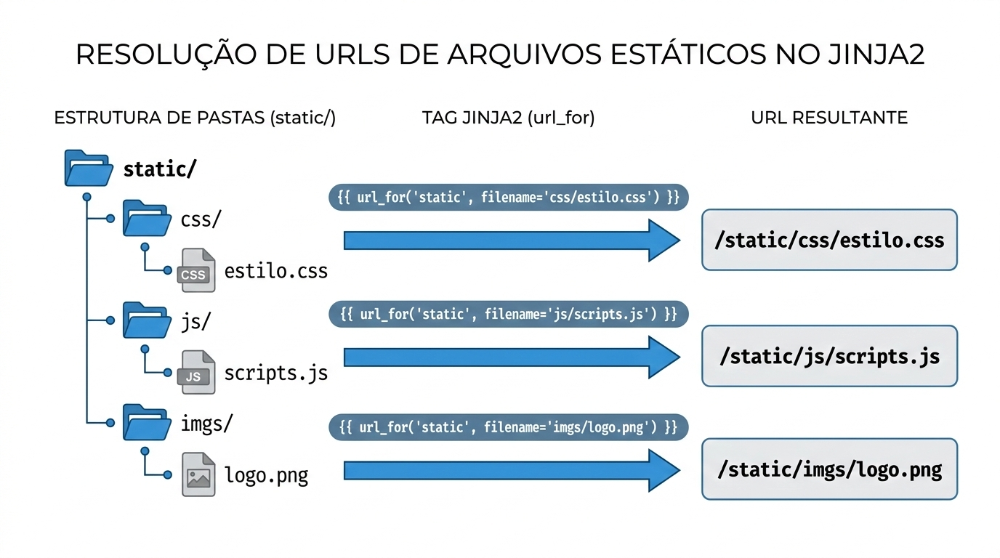
Parte 10 — Atividade da Aula¶
O que fazer¶
Nesta atividade você vai transformar a página inicial do seu projeto — o index.html criado na Aula 01 — em uma aplicação Flask real com Bootstrap e arquivos estáticos próprios.
Primeiro, crie o app.py com pelo menos três rotas: a rota / para a página inicial, uma rota /sobre descrevendo o sistema, e uma rota /contato. Segundo, mova o conteúdo do index.html para a pasta templates/ e converta-o para usar render_template. Terceiro, adicione Bootstrap a todos os templates, incluindo uma navbar com links de navegação entre as páginas. Quarto, na página inicial, use o sistema de grid com cards para apresentar pelo menos três funcionalidades do seu sistema.
Em seguida, trabalhe com os arquivos estáticos:
- Crie
static/css/estilo.csscom pelo menos três regras personalizadas que complementem o Bootstrap (cor da navbar, estilo do rodapé, efeito nos cards) - Coloque uma imagem qualquer em
static/imgs/e exiba-a em algum lugar da página (logo na navbar, imagem em um card, banner no topo) - Crie
static/js/scripts.jscom a funçãoconfirmarExclusaoe o código de fechamento automático de alertas - Certifique-se de que todos os arquivos estáticos são referenciados com
url_for('static', filename=...)— nunca com caminhos fixos
Lembre-se de fazer commits a cada etapa concluída — não apenas no final:
git add .
git commit -m "Aula 02: Flask, Bootstrap e arquivos estáticos (CSS, JS, imagem)"
git push
Resumo da Aula¶
Hoje você deu um salto enorme: saiu de páginas HTML estáticas para uma aplicação web real com servidor Python. Instalou o Flask com pip e gerou o requirements.txt. Entendeu o padrão MVC e a separação entre controllers (rotas) e views (templates). Criou um servidor Flask com múltiplas rotas — incluindo rotas com variáveis dinâmicas na URL. Separou o HTML do Python usando render_template. Transformou a aparência das páginas com Bootstrap, usando navbar, grid, cards, botões e alertas. E aprendeu a organizar e servir arquivos estáticos próprios — CSS personalizado, JavaScript e imagens — todos referenciados com segurança via url_for('static', filename=...).
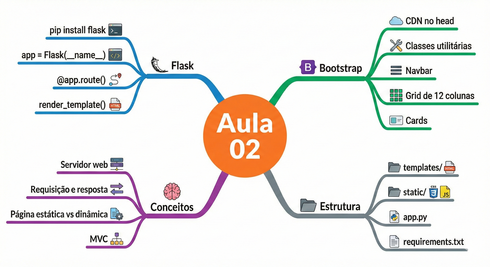
Na próxima aula você vai conhecer o Jinja2, o motor de templates do Flask, que vai permitir passar variáveis do Python para os templates HTML, criar estruturas condicionais e loops diretamente no HTML, e — o mais importante — criar um template base que todas as páginas herdam, eliminando a repetição da navbar e do cabeçalho em cada arquivo.
Referências e Leitura Complementar¶
A documentação oficial do Flask está em flask.palletsprojects.com — é muito bem escrita e tem um tutorial de início rápido excelente. A documentação do Bootstrap 5 está em getbootstrap.com/docs/5.3 — para qualquer componente que você queira usar, basta pesquisar lá e copiar o código de exemplo. O livro de referência da disciplina, Desenvolvimento Web com Flask de Miguel Grinberg (Novatec, 2019), cobre todo o conteúdo das próximas aulas com profundidade excelente.
⬅️ Aula anterior: Introdução, Git e HTML5 | ➡️ Próxima Aula: Templates Jinja2 e Rotas